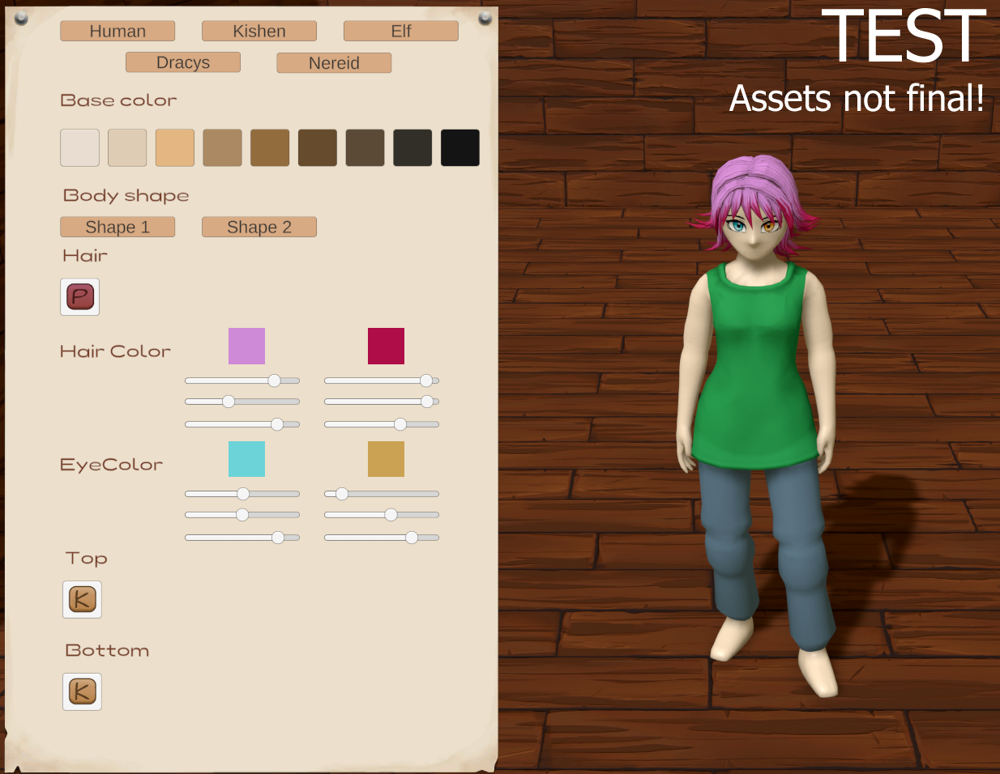
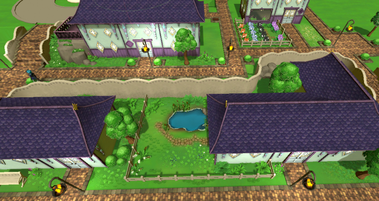

April 15, 2023 - Character Customizer
Hello all!
I hope you had a nice Easter time and enjoy the spring! Here the snow is finally melting and we can see the first grass in the garden.
Character Creator
Well, in the last two weeks the focus was again on the character creator. After binding and inserting new animations, I first created all the starting clothes. Each species has 2 species-typical clothes to choose from. It is still possible to choose the clothes of the other species, there are no restrictions. So currently there are 10 clothes to choose from.
A few more assets have been added and with a clear conscience I can say that the character creator is finished for now (except for more assets).
Item Creator
A year ago, I programmed a tool to create items quite easily in the game engine. However, this tool has become quite slow with the increasing number of items.
I didn't want to change it, because the whole game and a lot of code is based on it.
Now I have completely rebuilt the creator. You can read more about it on Patreon:
https://www.patreon.com/posts/new-itemcreator-81493760
The new creator is much faster and the code is now clearer for handling the items. This simplifies it enormously in the future. Also, I can now create hundreds of items in theory with one click (of course with some preliminary work).
Outlook
Farm trees, environment & NPCs
The focus in the next 2 weeks is among other things on the farm trees. I have already started to adapt the trees to our new tree style.
In general, the environment will be a bit more in focus now to get more visual aspects done. Marie is currently working on a concept to show the change in the world as the magic gradually returns.
NPCs
Between the environment, the existing NPC models will be adjusted and given basic animations. In addition, it should be possible to interact with them better than before by the end of the month.
Kickstarter
A plan for the Kickstarter campaign is now solidifying. The planned timeframe is October-November. To speed up the process of development a bit, money is definitely needed. One or two artists for all the assets as support and one person to do the story writing would be quite desirable. Otherwise, the release will be pushed further into the future.
If you want to support us independently, please have a look at our Patreon page.
https://www.patreon.com/moonflamegames
Best regards,
Your Magical Harvest Team
Isa & Marie
March 31, 2023 - Character Customizer
Hello all!
It's been a busy month. I hope you had it a little easier there....
The moving was a bit more stressful than expected and so I couldn't work on Magical Harvest for a week. Our new home is very idyllic, on the edge of a small village right next to the forest. Squirrels and a deer have already welcomed us :-). The snow in the garden is still over half a meter high here. Let's see when it will be spring here....
But now to Magical Harvest.
I didn't write any news in the middle of March. So now I summarize the whole month in one category:
Character Customizer
After I created a simple customizer at the beginning of the month, I reworked it completely. Originally I tried to get all options on one UI panel, but the space was too little to be able to design the character really well. At least with the species, where you can create tails, ears etc., the solution was not optimal.
So after I changed the system, it was easy to add new options. Of course, there is still work behind it, but there is simply no more lack of space and support for other screen sizes is therefore also secured.
In parallel, I found a good way to work with the hair creation and generally worked more with the base model to slowly bring it into the desired direction. The clothing and some options are currently still not final. The clothing is still causing a tiny bit of trouble with animations and so I'm not creating complex assets yet. My wish is to hire someone for this who can create better quality models. But I need funding first (Kickstarter is planned for the end of the year).

About the Customizer itself:
You can choose between the 5 different species. Apart from the skin color, from which you can choose from predefined options, you can customize your character according to your color preferences. Clothing colors are also predetermined, as clothes can be made throughout the game.
In addition to the basic options (hair, beard, eyes, top, pants, shoes and gloves), some of the species have additional customizing options:
- Ki'shen: (animal) ears & tail
- Elves: Tiara
- Drakys: scales, horns & tail
- Nereids: Head fin, stripes & scales
Species Bonus
Each of the species bring with them a bonus that affects the game. Currently, the idea is that you get 10% more gold from a certain category when you sell products (humans get 10% more when selling farm products, for example). Whether the currently added bonuses will stay that way, we will see as development progresses.
Outlook
The next step is to connect the customizer to the main game and save and load the right model. Then I need new animations.
So the focus is still on the character and also on the NPCs to make them come to life as well.
I hope that I will live up to your expectations with all the updates. It's probably not moving fast enough for you, but unfortunately this is a very big project. I'm working towards the Kickstarter campaign to be able to hire people to speed things up a bit. I just need to have something to show for it first.
Thanks for reading and see you next time!
Best regards,
Your Magical Harvest Team
Isa & Marie
March 01, 2023 - NPC Models & Character Creator
 Hello all!
Hello all!
For the last two weeks, I've just been sitting at the character creator. For now, this is just a kind of creator for the 3D software (Blender) that I use to model the assets. This creator can be used to create different body dimensions (more muscular, thicker, thinner, etc) for the NPCs. Before that, I made some improvements to our base model.
NPCs
Pretty motivated by how this external creator works, I just directly created 3 of our marriage candidates. Lyris, Thalana and Zarek have their ingame model (the eyes still need to be adjusted).
Especially Lyris with all the patterns was a lot of work, which you don't really see in the game outside of cutscenes anyway... Anyway, I'm happy with the result of the 3.
With our game characters, we make sure that they don't look too young. At least we try to.

Animations
I was also able to implement a system to use some pre-made animations and additionally create my own animations. This is a bit more complex, as before I could only use either the pre-made animations or my own. A mix helps tremendously to speed up the workflow.
Animations are not that easy, especially if you want them to look good.
Character Creator
The last 2 days I was working on the character creator for the players. The image shown is a work-in-progress with a few test assets I created and definitely not final. It's a first step towards building the customization system.
As you can see, there will be two-tone hair that you can color to your liking. So will the eye color.
The skin color will be choosable from given options, since we have different species here and they just happen to have their own color scheme.

It is possible to choose between body shapes (male and female). Clothes can be worn in both variants. Pronouns will also be freely selectable and in the English version Them/They will also be supported.
We were considering including some kind of facial decoration. However, the character in the game is quite small and this will be of little importance. Is there anything else you would like to see in this direction? Like patterns, scars?
Beard is definitely still missing. I just started with the creator, so be patient!

Outlook
In the next two weeks the focus will be on the character creator plus the necessary assets.
Nothing else, because we are moving soon and have to do some things for it - besides planning and making things for our wedding.
I'll try to publish news on March 15th, but I can't guarantee it.
Best regards,
Your Magical Harvest Team
Isa & Marie
February 15, 2023 - NPC-Behavior & Town

Hello all!
The last 2 weeks went by really fast... And somehow, I did a lot and yet not much.
Global Game Jam
First, I participated in the Global Game Jam and designed a small puzzle collection based on images. The game should serve as a base to expand it and test out simple, potential minigames for Magical Harvest. https://isavii.itch.io/roots
City
The first part of the Shaylin Order's city district has been created. This includes 4 houses, the general street layout, textures and initial decorations to get a feel for the city look.

In addition, lights have already been adjusted for day and night conditions and a system has been implemented to easily adjust textures that change during gameplay in the future. Interiors have not been created yet.
The current images don't show the final city look yet, but the direction. We still need a lot more assets...
NPCs
I have effectively started working on NPC logic. That is, I've created a tool that allows us to create the walking routes and actions of NPCs. This is not too easy and is still a work in progress, but so far we can at least create a daily routine for NPCs.

The whole thing will end up being a lot of work, as many special cases have to be taken into account.
Do the NPCs do different things on Tuesday than they do on Monday? Do they do something different on Wednesdays when they have 4 hearts than when they have 7 or no hearts? What do they do when they are married to the player? Or do they do something different when it's raining than when it's sunny?
You see, this can get quite complex.
Creating the tool took so much time that I didn't animate any more animals. But I think I will put this on hold for now and continue working on the missing core content of the game.
 Outlook
Outlook
Since working on the NPCs with the few models isn't pretty, I'm thinking about creating the character creator. There are 5 species to consider, some with tails, different sizes and body shapes. Could be exciting!

Last weekend we also drove 10h further north to the middle of Sweden to sign our rent-contract. We will move in the middle of March. Work will then stop for about a week until we get settled in. We are not city people, but I guess, the place with 130 inhabitants will take a lot of getting used to.
Best regards,
Your Magical Harvest Team
Isa & Marie
February 01, 2023 - Animals, Town and Daytimes
 Hello all!
Hello all!
We hope you are well and enjoying your time!
As huge Harry Potter fans, we are really looking forward to Hogwarts Legacy - what about you? There's magic happening as well!
Since we will be playing more, we are now focusing more on Magical Harvest and a lot has been added in the last 2 weeks.
Animals
As you know, I (Isa) worked on the animations of the animals. This is quite tedious and not very exciting, which is why I switched to other areas from time to time. We now have animations for the first animals, which are already integrated into the game.

The "breeding mini-game" is also already implemented in the basics, but still needs to be spruced up, for which more species assets are needed, which have been put on hold for this area for now. We really need someone else to help us with the assets.... That would speed up the process a lot.
It is now possible to interact with the animals, take them out of the barn and put them back in the barn, and they produce products.
Day-night cycle
Previously, we had a day-night cycle where the sun moved across the sky. Unfortunately, this resulted in flickering shadows, which looked quite annoying, and in general I didn't like the effect very much. Now we have transitions between the times of day at 9am, 5pm and 9pm respectively. At these times, the daytime-state changes from morning to noon, noon to evening, and evening to night. This is a much better indication of when the daytime-state changes (which is important when fishing, for example), and it looks much better too!

The city Dragonreath
The city will need a lot of assets. Since I don't like to work with ugly placeholder-cubes for testing, I started creating the city (for a change from animations). Marie designed the rough layout of the city so we can see where which buildings are and based on that, I'm now creating the walkable layout.
The city itself is divided into 3 districts with their own style of houses. In addition, the plan is to partially adapt plants to the districts as well. With increasing magic in the world, these plants should also look more magical. So, a lot of assets are needed here....
I have designed a system for creating the streets and have already implemented a part for testing. The following image is a test scene of a part of the city and is definitely not final.
However, we want to keep the green aspect in the city and not pave everything over!

Character concepts
The illustration-raw concepts for Lyris (Bachelorette, human) and Ky'rah (Bachelorette, Ki'shen) are done. Lura helped us with these and continues to do a super job! Thank you, Lura!
Outlook
The next two weeks will still be focused on animal animations and the city, as well as general improvements here and there for my own change.
So, it doesn't sound that exciting, but we'll see what else comes along!
This weekend is also Global Game Jam. I'm going to take part in it and program one or two little puzzle games that can eventually serve as a little mini-game in Magical Harvest. Let's see! I will report on that as well!
Hopefully Hogwarts Legacy won't distract us too much. Will you play it as well?
Best regards,
Your Magical Harvest Team
Isa & Marie
January 15, 2023 - Homepage Update
Happy new year!
Our first news in 2023! My year started with my family visit to Germany, which I had to postpone in November because of Corona. Therefore, the work on the game itself stopped a bit. But of course I didn't rest even on the trip. I used the time to update the homepage, among other things.
Homepage update: Bachelor/ettes descriptions
The homepage has been revised. You will now find under the heading "Cast" all fixed planned Bachelors and Bachelorettes and their descriptions. Illustrations will be finished one by one by our dear Lura.
We hope you find the choice of our bachelors/ettes interesting and that there is something for everyone. We tried to create personalities that are not so common in farm games and also some that we like ourselves, obviously. Of course, you won't have a real idea until all the illustrations are done.
In addition, there is now a press kit that summarizes the MH project in order to be able to approach potential investors in the future (we still have practically no financial support. Thanks here to our two patreons who support us!).
Animals and cross-breeding
In Magical Harvest it is possible to cross breed animals magically. The corresponding minigame is now implemented in its base. Animals are still the central development point at the moment. Creating the 3D models, the textures, icons and animations takes a lot of time, but it's coming along!

Architecture
Marie is currently sitting on the design of the buildings for all 3 factions. I started creating the first building models from the concepts so far. We will probably go modular and create walls, windows, and roofs independently, then assemble the houses as we like.
Outlook
Animals will continue to be a central topic. I want to finish this part of the game first, before I start the next big programming part (NPCs).
In between, however, I will create the first assets for our city. I'm really looking forward to that!
Marie will continue to work on the concept of the city.
Best regards,
Your Magical Harvest Team
Isa & Marie